이 Idleon Accuracy(명중률) 가이드는 명중률을 높이는 방법과 각 월드 몬스터에 대한 요구 수치를 상세히 설명합니다. Accuracy는 초반 게임(World 3까지)에서 신규 플레이어 진행을 가로막는 가장 흔한 장벽으로, 수천 시간의 Idleon 게임플레이를 바탕으로 이 도전을 극복하는 팁을 제공합니다.
Accuracy 기초
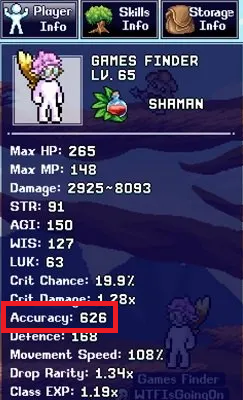
Accuracy는 적을 타격할 확률이며, 100% Accuracy가 되면 경험치나 몬스터 드롭을 최대로 획득할 수 있습니다. 현재 명중률은 캐릭터 스탯 창과 AFK Info(방치 정보) 화면에서 확인할 수 있습니다.
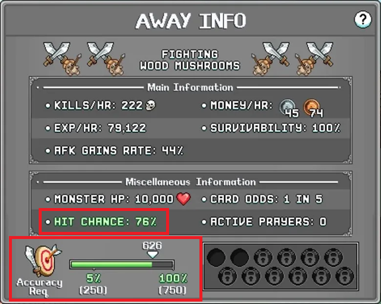
예를 들어 Wood Mushrooms 맵에서는 AFK Info 화면에 76%의 명중 확률이 표시됩니다. 이 화면에서는 해당 몬스터의 최솟값이 250이며, 100% 명중을 위해서는 750 Accuracy가 필요하다는 것도 확인할 수 있습니다.
월드별 Accuracy 요구치
아래는 World 3까지의 보스에 대해 100% 명중에 필요한 Accuracy 수치입니다. 중간의 모든 몬스터는 이 페이지 하단에 포함되어 있습니다. World 3 이후에는 클래스 명중률 스탯과 수많은 계정 보너스가 요구치를 훨씬 초과하므로 Accuracy는 더 이상 문제가 되지 않습니다.
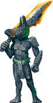
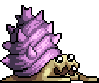
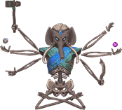
| 월드 | 첫 번째 적 | 마지막 적 | 월드 보스 |
|---|---|---|---|
| World 1 | 2 | 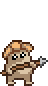 750 | Amarok: 158 |
| World 2 | 30 | 375 | Efaunt: 825 |
| World 3 | 435 | 3,900 | Chizoar: 3,375 |

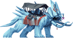
Accuracy를 높이는 방법
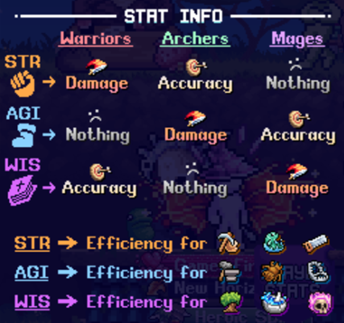
Idleon에서 명중률을 높이는 방법은 다양하며, World 3까지 플레이어가 접근할 수 있는 주요 방법을 대략적인 순서로 아래에 설명합니다. 그 외의 Accuracy 출처는 World 3 이후에는 문제가 되지 않습니다.
보조 클래스 스탯 (Secondary Class Stat)
명중률을 높이는 가장 쉬운 초반 방법은 보조 클래스 스탯으로, World 1에서는 주로 클래스 탤런트와 장비(업그레이드 스톤 포함)에서 얻습니다. World 2 이후에는 스탯을 추가하는 다양한 계정 전체 메커니즘이 있으며, 한 캐릭터의 명중률 스탯이 다른 클래스의 데미지 스탯이 되므로 항상 높여야 진행이 두 배로 빨라집니다.
| 클래스 | 명중률 스탯 |
|---|---|
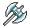 Warrior |  WIS (Wisdom) WIS (Wisdom) |
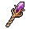 Mage | 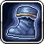 AGI (Agility) |
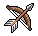 Archer |  STR (Strength) STR (Strength) |
| LUK (Luck) |
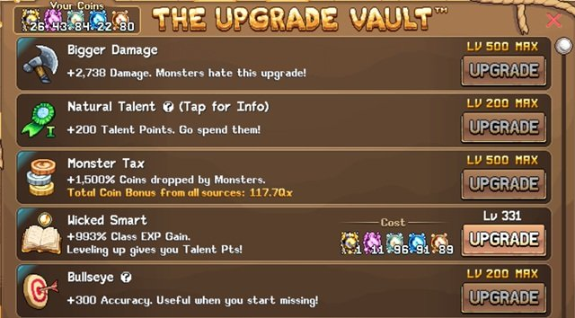
Upgrade Vault
Upgrade Vault는 플레이어가 돈을 다양한 업그레이드로 교환할 수 있는 핵심 진행 메커니즘입니다. Bullseye가 가장 큰 부스트를 제공하고, 다른 업그레이드는 다른 명중률 소스의 효과를 향상시킵니다.
| 업그레이드 | 설명 | 최대 레벨 |
|---|---|---|
| Bullseye | 명중률 | +200 Accuracy |
| Stamp Bonanza | 스탬프 보너스 향상 (Target stamp 포함) | 3x 보너스 |
| Vial Overtune | 바이알 보너스 향상 (Fly In My Drink vial 포함) | 1.3x 보너스 |
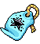 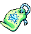 Vault Mastery 1 & 2 | Vault 업그레이드 보너스 배수 | 1.5x 보너스 |
Party Dungeons
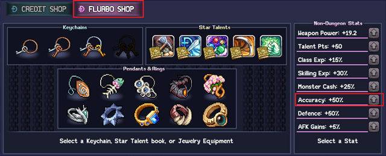
Party Dungeons(파티 던전)은 World 1에서 이용 가능하며, 던전 완료로 얻는 분홍색 화폐인 Flurbo 상점에서 명중률을 높일 수 있습니다. 화면 왼쪽에 표시되는 해피 아워(happy hour) 알림을 활용하면 많은 파티원이 모여 효율적으로 Flurbo를 얻고 Dungeon Boosters를 쓸 수 있습니다.
Accuracy Stamps
World 4 이전에는 기본 명중률을 제공하는 스탬프가 두 개 있고, 추가 소폭의 스탯 부스트를 제공하는 스탬프도 여러 개 있습니다.
| 스탬프 이름 | 효과 (레벨당) | 입수처 | 재료 |
|---|---|---|---|
| Target Stamp | 기본 명중률 +1 | Blunder Hills (W1) 상인 |  Thread Thread |
| Bullseye Stamp | 기본 명중률 +2 | W2 적 (Tyson, Moonmoon, Sand Giant, Snelbie, Efaunt, Chaotic Efaunt) | 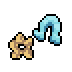 Sentient Cereal |
Alchemy (연금술)
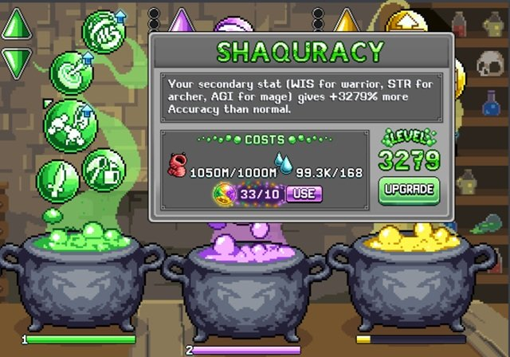
Alchemy는 액체와 자원을 투자하여 다양한 계정 보너스를 얻는 강력한 게임 메커니즘입니다. 첫 번째 버블들은 명중률을 추가하는 평탄 스탯을 제공하고, 7번째 초록 버블인 Shaquracy는 이 효과를 강화하며 Bloaches로 업그레이드할 수 있습니다.
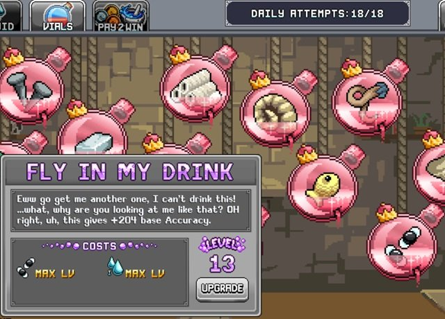
또한 World 2의 첫 번째 맵(Sandy Pots)에서 얻을 수 있는 Fly 바이알도 있습니다. 처음에는 3,600개의 자원이 필요한 초록색(레벨 4)을 목표로 하는 것을 권장합니다.
Poppy the Kangaroo Mouse
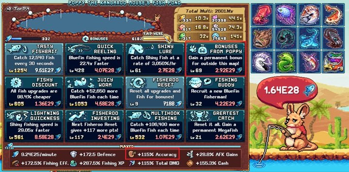
Poppy는 World 2에서 "Bonuses From Poppy"를 업그레이드하면 또 다른 큰 명중률 증가를 제공합니다. World 2 마을에서 보물 지도를 구매하고 지시에 따라 이 게임 기능을 잠금 해제하세요.
Accuracy Cards
Accuracy Cards는 더 강한 카드를 채우기 전에 사용 가능한 카드 슬롯을 채우는 유용한 부스트입니다. 다양한 몬스터나 자원에서 쉽게 획득할 수 있으며, 카드를 더 많이 모을수록 효력이 강해집니다.
| 출처 | 효과 | 기본 | 브론즈 | 실버 | 골드 |
|---|---|---|---|---|---|
| Copper Ore | 기본 명중률 + | 4 | 8 | 12 | 16 |
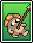 Wood Mushroom | 총 명중률 % + | 5 | 10 | 15 | 20 |
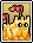 Sand Castle | 총 명중률 % + | 4 | 8 | 12 | 16 |
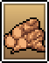 Veiny Logs | 총 명중률 % + | 3 | 6 | 9 | 12 |
| Neyeptune | 총 명중률 % + | 5 | 10 | 15 | 20 |
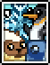 Frostbite Tundra (세트) | 방어력 및 명중률 % + | 5 | 10 | 15 | 20 |
Statues (조각상)
명중률을 높이는 조각상이 World 1에서 하나 획득 가능합니다. 진행이 이루어지면 조각상 효과를 높이는 여러 메커니즘이 있으므로, 이 작은 퍼센트도 상당한 증가가 될 수 있습니다.
| 조각상 | 효과 | 드롭 출처 |
|---|---|---|
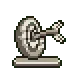 Bullseye | 명중률 % | Nutto, Walking Stick, Wood Mushroom |
Idleon Accuracy 요구치 (지역별)
아래는 지역 및 보스별로 분류된 Idleon 적의 명중률 요구치입니다. 플레이어는 이 몬스터를 파밍하기 전에 권장 명중률(100%)을 목표로 해야 하지만, 보스는 약간 낮은 명중률로도 처치 가능합니다.
Blunder Hills (W1)
| 적 | 권장 명중률 (100%) |
|---|---|
| Green Mushroom | 2 |
| Frog | 2 |
| Bored Bean | 3 |
| Red Mushroom | 38 |
| Slime | 6 |
| Baby Boa | 8 |
| Carrotman | 9 |
| Glublin | 11 |
| Wode Board | 9 |
| Gigafrog | 90 |
| Poop | 150 |
| Rat | 270 |
| Walking Stick | 225 |
| Nutto | 300 |
| Wood Mushroom | 750 |
Yum Yum Desert (W2)
| 적 | 권장 명중률 (100%) |
|---|---|
| Sandy Pot | 30 |
| Mimic | 38 |
| Crabcake | 45 |
| Mafioso | 68 |
| Sand Castle | 90 |
| Pincermin | 120 |
| Mashed Potato | 150 |
| Tyson | 225 |
| Moonmoon | 278 |
| Sand Giant | 345 |
| Snelbie | 375 |
| Dig Doug | 342 |
Frostbite Tundra (W3)
| 적 | 권장 명중률 (100%) |
|---|---|
| Sheepie | 435 |
| Frost Flake | 495 |
| Sir Stache | 540 |
| Bloque | 638 |
| Mamooth | 825 |
| Snowman | 1,125 |
| Penguin | 1,425 |
| Thermister | 2,650 |
| Quenchie | 1,875 |
| Cryosnake | 2,250 |
| Bop Box | 2,700 |
| Neyeptune | 3,600 |
| Xylobone | 150 |
| Bloodbone | 3,900 |
| Dedotated Ram | 3,750 |
Bosses (보스)
| 적 | 권장 명중률 (100%) |
|---|---|
| Baba Yaga | 450 |
| Dr Defecaus | 900 |
| Biggie Hours | 900 |
| King Doot | 1,500 |
| Dilapidated Slush | 3,000 |
| Amarok | 158 (일반), 2,625 (혼돈), 12,000 (빛나는) |
| Efaunt | 825 (일반), 5,250 (혼돈), 22,500 (도금) |
| Chizoar | 3,375 (일반), 11,300 (혼돈), 37,500 (역병) |